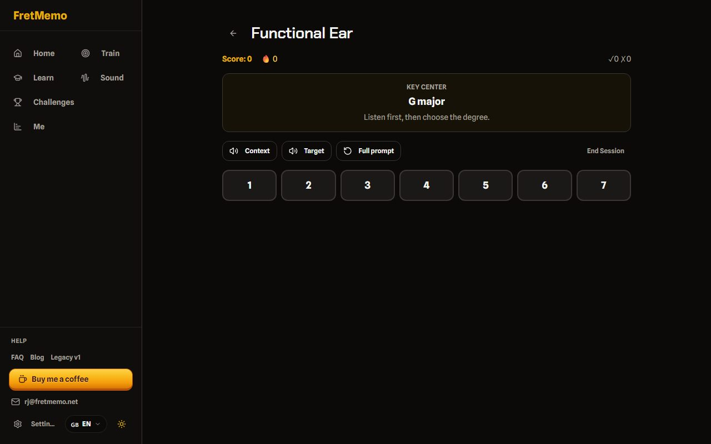

FretMemo has free ear training for guitar in four modes: "Find the Note", "Interval Recognition", "Chord Quality" and "Functional Ear". The app plays a sound, and you answer by clicking a spot on the fretboard, an interval, a chord quality or a scale degree. It runs in the browser without an account, and none of the modes uses the microphone.
I added these because a fretboard trainer teaches you where the notes are and says nothing about what they sound like. You can know every A on the neck and still not hear whether the note in a melody is the third or the fifth of the key.

What ear training should do for a guitarist
A lot of ear training is built for singers or pianists. It asks you to name an interval and stops there. A guitarist needs two more answers: where is that note on my neck, and what is it doing in the key? Those two are what let you work out a melody from a record or find the next note of a solo without trying every fret.
The four modes split the work up. "Find the Note" ties a pitch to the fretboard. "Interval Recognition" and "Chord Quality" train the distances and chord colours you hear all the time. "Functional Ear" asks what a note does in a key, and for playing by ear I think it's the most useful of the four.
The four Ear Training modes
- Find the Note. The app plays one random note between E2 and C5, the range from the open low E string to the 8th fret of the high E. You click a fret from 0 to 12. Any position with the same note name counts, and after you answer the app marks every correct position on the board.
- Interval Recognition. Two notes, and you pick the interval. "Easy" uses unison, minor and major third, perfect fourth, perfect fifth and octave. "Medium" adds the major second and major sixth. "Hard" uses all 13 intervals from unison to octave, tritone included. The lower note is random, between C3 and B3.
- Chord Quality. The app plays a chord and you name its quality. "Triads" has Major, Minor, Diminished and Augmented. "Extended" adds Sus2, Sus4, 7, Maj7 and m7, nine qualities in all.
- Functional Ear. An I-IV-V-I cadence sets the key, then one target note sounds, and you press its degree, "1" to "7". "Context", "Target" and "Full prompt" replay each part. The options are "Key mode" ("Random" or "Fixed"), "Active degrees" and "Auto-next", which jumps to the next prompt after a correct answer. The mode also keeps accuracy and average response time for each degree.
The direction of the intervals lives in Settings, not on the drill screen. Under Me → Settings → "Training Module Defaults", "Ear Training Default Direction" switches between "Ascending", "Descending" and "Harmonic" (both notes together), and "Active Ear Intervals" limits the drill to the intervals you tick.
Scoring, sound and the microphone question
All four modes score the same way. A correct answer is worth 10 points plus 2 for each correct answer already in your streak, so the fifth right answer in a row earns 18. A wrong answer adds nothing and resets the streak.
No mode listens to you. The app plays every prompt and you answer with a click or a tap, so headphones and a phone on the bus are enough. Prompts play through FretMemo's guitar sound with whatever preset is active on the Sound page, the same sound the rest of the app uses. If you picked a high-gain preset there, switch to a clean one before Chord Quality, because distortion makes chord colours harder to tell apart. Browsers also need one tap before they play audio, so "Find the Note" reminds you: "Tap start once to unlock audio."
How to start Functional Ear
- Open fretmemo.net/ear-training/functional, or go to "Train", scroll to "Ear Training" and pick "Functional Ear".
- Leave "Key mode" on "Random" for a new key with each question, or choose "Fixed" and a key to stay in one.
- Under "Active degrees", keep only 1, 3 and 5 for your first sessions.
- Press "Start Training" and listen to the cadence, then the target note.
- Press the degree you heard. If you lost the key, press "Context" to hear the cadence again, or "Target" for the note.
- Add 4 and 7 when the first three feel easy, then 2 and 6.
- Press "End Session" when you're done.
A ten-minute routine
Three minutes of "Find the Note", three minutes of "Interval Recognition" on "Easy" with "Ascending", then four minutes of Functional Ear. Once Easy gets boring, set the direction to "Harmonic", which is how intervals arrive in chords. Leave "Chord Quality" on "Extended" for later, because 7, Maj7 and m7 are easy to confuse at first.
Then pick up the guitar. Play I-IV-V-I in G yourself, sing a degree, and find it on the B string. The app can't check that part, and it's the part that carries over to songs. When you want the app to listen to what you play, the drills in the fretboard note trainer with a microphone do that. Timing is a separate skill with its own tool, covered in the guitar rhythm trainer post.
Limits
- Functional Ear works in major keys only. There are no minor keys or modes yet.
- The context is always the same I-IV-V-I cadence of major triads.
- "Find the Note" accepts any position with the right note name. It doesn't check that you picked the octave you heard.
- The app knows which button you pressed, nothing more. It can't tell whether you can sing or play what you heard.
- Interval direction is a global setting, so switching between ascending and harmonic means a trip to Settings.
FAQ
What is the best way to do ear training for guitar?
Train what you use on the guitar: where a note you hear sits on the neck, intervals, chord qualities and scale degrees in a key. FretMemo's free Ear Training has a mode for each of the four. For playing by ear, the Functional Ear mode, which asks for scale degrees after a I-IV-V-I cadence, is the one I would start with.
Do I need a microphone for ear training on FretMemo?
No. All four Ear Training modes play the prompt and take your answer as a click or tap, and none of them uses the microphone. Headphones are enough.
How does functional ear training work?
The app plays a short cadence, I-IV-V-I, so your ear settles on a key, then it plays one note. You name that note's scale degree, from 1 to 7. In FretMemo the Functional Ear mode uses major keys, with a random key per question or a fixed key.
Can I practice interval ear training for free?
Yes. FretMemo's Interval Recognition is free in the browser without an account. It has 13 intervals from unison to octave in Easy, Medium and Hard levels, played ascending, descending or harmonic.
Try Functional Ear
Hear a cadence, then a note, and name the degree. No mic and no account needed.
Open Functional Ear Free, no account, runs in the browser.